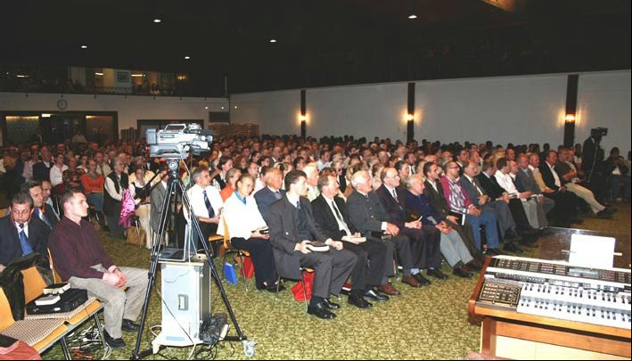

“Jésus-Christ est le même hier, aujourd’hui, et éternellement” (Hébreux 13.8).
LETTRE CIRCULAIRE N° 59
FEVRIER 2006
UN REGARD SUR LE PASSE, LE PRESENT ET L’AVENIR
Chers frères et sœurs dans le Seigneur, chers amis, je vous salue de tout cœur avec cette parole des Actes 20.26,27:
“C’est pourquoi je vous prends aujourd’hui à témoin que je suis net du sang de tous; car je n’ai mis aucune réserve à vous annoncer tout le conseil de Dieu”,
ainsi que par la parole d’Apocalypse 1.4:
“Grâce et paix à vous, de la part de celui qui est, et qui était, et qui vient…”.
Celui qui écrit au sujet du plan de salut de Dieu pour l’humanité doit inclure le passé, le présent et l’avenir. Ce qui dans le Royaume de Dieu est arrivé dans le passé a précédé ce qui arrive maintenant, et à nouveau ceci précède ce qui est encore à venir. Les véritables enfants de Dieu, qui sont conduits par le Saint-Esprit, ont toujours eu part à ce que Dieu faisait en leur temps. Ils pouvaient ordonner ce qui était du passé, se laisser inclure dans les événements présents du salut et avaient une compréhension claire, fondée sur les promesses, concernant ce qui devait arriver dans le futur.
Par exemple, ceux qui ont reçu Jean-Baptiste comme un homme envoyé de Dieu (Jean 1.6-7) n’ont eu aucune peine à reconnaître le ministère de Jésus-Christ. Celui qui préparait le chemin du Seigneur avait la tâche de tourner le cœur des croyants de l’Ancienne Alliance à la foi des enfants de la Nouvelle Alliance (Luc 1.16,17). Les pharisiens et les scribes ne se laissèrent pas baptiser par Jean-Baptiste et ne se soumirent pas à la volonté de Dieu, rejetant de cette manière le conseil du salut de Dieu (Luc 7.27-30). C’est pourquoi, ils ne participèrent point à ce que Dieu fit depuis la fondation de l’Eglise du Nouveau Testament. Ils restèrent dans leurs traditions religieuses, avec une grande sincérité ils étaient ancrés en elles, n’entrant pas eux-mêmes dans le Royaume de Dieu et empêchant aussi le peuple d’y entrer. Dans tous les temps passés, cela est ainsi arrivé quand Dieu faisait quelque chose sur la terre. C’est ainsi qu’il en sera jusqu’à la fin. Parce qu’en leur temps ils n’avaient pas reconnu la visitation en grâce de Dieu, le jugement est venu sur eux comme le Seigneur Lui-même l’avait dit dans Luc 19.41-44.
QUARANTE ANNEES ESPACE DE TEMPS BIBLIQUE
Aussi bien pour Moïse, le plus grand prophète de l’Ancien Testament, que pour David, le roi d’Israël tout particulièrement oint et béni - il y eut dans leur vie un espace de temps particulier de quarante années, qui était une période correspondant à la volonté de Dieu pour Ses serviteurs et Son peuple. Ce qui arrive conformément au plan de salut de Dieu avec Israël, comme aussi avec l’Eglise, est déterminé à l’avance. Il en va de même avec tous ceux qui ont une part à cela. C’est ainsi que s’accomplit toujours cette parole de Romains 11.7: “… mais l’élection l’a obtenu…”.
Déjà, avant la fondation du monde, avant le commencement, avant qu’il y ait un début de temps, Dieu avait établi le plan du salut dans son entier. Il savait bien que le premier fils qu’Il avait créé à Son image, Adam, allait, dans son corps de chair, chuter. C’est ainsi qu’Il a dû amener Son Fils seul engendré, en tant que dernier Adam, à apparaître dans un corps de chair. Cela, pour nous délivrer du péché et de la mort, parce que la mort a passé à tous les hommes lors de la chute. Adam avait été créé à l’image de Dieu (Gen. 1.27; 5.1); Christ était l’image de Dieu (2 Cor. 4.3-6; Héb. 1.3).
Il est généralement connu que l’Evangile a été à nouveau prêché au cours des cinq cents ans qui viennent de s’écouler depuis la percée de la Réformation. Les divers réveils qui eurent lieu depuis étaient chaque fois un nouveau commencement, et chacun servait déjà de préparation au réveil suivant. Il y a bientôt cent ans, une fois encore il y eut un nouveau commencement: le grand réveil de Pentecôte dans lequel l’Esprit de Dieu agissait d’une manière puissante. Il y a environ soixante ans, Dieu, au travers de l’appel surnaturel de William Branham, le 7 mai 1946, fit un nouveau commencement. Après cela, eut lieu la percée du plus grand réveil de salut et de guérison de tous les temps, qui se prolongea dans divers mouvements après le retour à la maison de l’homme de Dieu, le 24 décembre 1965.
Parce que par la grâce de Dieu j’ai une part personnelle à ce que Dieu avait promis pour ce temps, et qu’Il est en train de réaliser, je voudrais donc éclairer les quarante années passées qui se rattachent à l’histoire du salut divin. C’est plein de reconnaissance que nous regardons en arrière sur ce que notre Seigneur fidèle a fait dans cette période de temps parmi Son peuple, et qui inclut avec elle l’histoire de ma vie. Ceux qui se sont joints plus tard ont aussi le droit de savoir comment était ce nouveau commencement, tout comme ils ont aussi le droit de savoir quelle est la merveilleuse suite. Pendant dix ans, j’ai été en contact personnel avec frère Branham et je suis bien au courant de son appel et de la commission qu’il a reçue. Il est entré dans l’histoire en tant qu’homme envoyé de Dieu et son message fondé sur la Parole — aussi quand il rencontre de l’opposition — va au devant de la deuxième venue de Christ, comme cela lui a été dit le 11 juin 1933. Si je me rapporte à des directives et à certaines expériences, c’est seulement afin que tous sachent que Dieu s’est manifesté également dans ce temps.
Tout d’abord, j’ai eu le grand privilège, du 13 au 19 août 1955, de prendre part à ses rencontres de Karlsruhe. C’était une expérience particulière et, dès le premier jour, j’étais persuadé que personne ne pouvait accomplir les œuvres qui arrivaient ici, sinon à la condition que Dieu soit avec lui et les réalise. Il arrivait véritablement que des aveugles retrouvaient la vue instantanément, que des paralytiques marchaient et que des malades recouvraient la santé, et ainsi de suite. J’ai vécu des jours comme dans la Bible et comme ceux du temps des apôtres, j’ai entendu de mes oreilles et vu de mes yeux ce qu’ils avaient vu et entendu. Quel temps de bénédictions c’était! Je prêchais moi-même depuis 1953; cependant dans ces réunions je voyais comment Jésus-Christ, soir après soir, devant des milliers de personnes, rendait témoignage qu’Il était le Même hier, aujourd’hui, et dans l’éternité. Et je voulais savoir ce que croyait et enseignait cet homme, car je voyais très bien que Dieu était avec lui.
Je savais de combien de manières différentes les gens croyaient et enseignaient, mais ce qui me tenait à cœur était d’apprendre à connaître «le vrai Evangile» et la «véritable doctrine» que Dieu confirmait si puissamment devant mes yeux. C’est avec ce grand désir que j’ai pris part à la grande Conférence de «Voice of Healing» à Dallas, Texas, USA, qui avait été organisée par Gordon Lindsay du 6 au 15 juin 1958. Dans les rencontres du matin et de l’après-midi, c’étaient des évangélistes bien connus qui parlaient, mais à la réunion du soir, c’était frère Branham l’orateur principal. C’est ainsi que j’avais la possibilité de faire une comparaison, si bien que trois jours me suffirent pour y voir clair.
De même que le Seigneur en tant que Fils de l’homme voyait en vision ce qui devait arriver — “… le Fils ne peut rien faire de lui-même, à moins qu’il ne voie faire une chose au Père…” (Jean 5.19) - ainsi frère Branham voyait en vision ce qui concernait la personne pour laquelle il priait. Lorsqu’il voyait en vision qu’elle était guérie, sans égard à la maladie dont elle souffrait, il pouvait prononcer avec une toute autorité divine la parole de commandement: «Sois guérie! Sois en bonne santé au Nom de Jésus-Christ de Nazareth! Ta foi t’a guérie!». Et cela arrivait à l’instant même! Au travers de ce ministère unique s’accomplissait littéralement ce qui se trouve écrit dans Jean 14.12: “Celui qui croit en moi fera, lui aussi, les œuvres que moi je fais…”. Des millions de personnes l’ont expérimenté pendant les vingt années, entre 1946 et 1965. On ne peut pas le nier, seulement le rejeter. Ce qui différencie frère Branham de tous les autres évangélistes, c’est la légitimation divine de son ministère.
Avant une réunion du soir à Dallas, je cherchais à parler à frère Branham et je lui dis alors: «Frère Branham, je reconnais que tu es un homme envoyé de Dieu. Je reconnais la différence entre toi et tous les autres évangélistes. Je voudrais savoir ce que tu crois et ce que tu enseignes». A ce moment-là, je n’avais aucune idée d’un «Message». Sa réponse fut celle-ci: «Va vers Leo Mercier, il est celui qui enregistre les prédications sur bandes. Demande-lui de t’en donner quelques-unes…». Pour finir cette conversation, il me dit: «Frère Frank, tu retourneras avec ce Message en Allemagne». Le jour suivant, j’allais vers frère Mercier et reçus de lui cinq prédications sur bande. Il me dit: «Frère Frank, quand tu auras écouté les prédications et que tu en voudras d’autres, fais-le nous savoir». Ma réponse fut celle-ci: «Voici mon adresse: envoie-moi toute prédication que tiendra frère Branham». Ainsi, depuis 1958, j’ai reçu toutes les prédications que frère Branham a prêchées aux Etats-Unis.
L’appel que j’ai reçu du Seigneur le 2 avril 1962 est connu de tous ceux qui sont au courant du Message du temps de la fin. Ils savent de même que la confirmation par frère Branham a eu lieu le 3 décembre 1962 en présence des frères Banks Woods et Fred Sothman, qui vivent encore, et Dieu Lui-même l’a confirmé comme véridique au cours des plus de quarante années écoulées.
Vers la fin de la conversation, frère Branham dit: «Frère Frank, la nourriture que tu dois mettre en réserve est la Parole promise pour ce temps et révélée… Cependant attends pour la distribution jusqu’à ce que tu aies reçu le reste…». Je dois admettre qu’après les réponses que j’avais reçues de lui jusque là, cette partie était pour moi incompréhensible. J’avais compté qu’avec cela mon temps était venu. Que je doive encore attendre m’attrista. Ce n’est que plus tard qu’il me devint clair que l’attente concernait seulement la deuxième partie, c’est-à-dire que cela se rapportait à la distribution de la nourriture que frère Branham devait d’abord mettre en réserve, mais elle ne concernait pas la première partie, qui était d’aller de ville en ville pour annoncer la Parole de Dieu.
La conversation suivit son cours. Cependant, tout d’un coup frère Branham devint silencieux et dit à l’improviste: «Frère Frank, au sujet du voyage de Paul à Jérusalem, tu n’as pas besoin de te faire du souci: il était dans la volonté de Dieu». Cela m’avait préoccupé de nombreuses années car je ne réussissais pas à comprendre pour quelle raison Paul était entré dans le Temple de Jérusalem, qu’il avait fait un vœu et, selon la loi, qu’il avait payé pour la purification de lui-même et pour ceux qui l’accompagnaient, et ainsi de suite (Act. chap. 21). En effet, cela contredisait ce qu’il avait lui-même expérimenté et prêché. Une fois, il y a de nombreuses années, j’avais dit: «Paul, lorsque je te verrai dans le ciel, je te questionnerai à ce sujet». Durant toute notre conversation avec frère Branham je n’avais pas du tout pensé à cela. Cependant Dieu, qui connaît toutes choses, l’avait révélé à Son prophète. Au cours de cet entretien, frère Branham me dit aussi qu’il allait, Dieu voulant, venir avec David DuPlessis en Allemagne, ce qui malheureusement ne se réalisa pas.
En ce qui concerne l’Allemagne, depuis déjà très longtemps ce qui me préoccupait était la question de savoir si à cause de la mise à mort de 6 millions de Juifs pendant le Troisième Reich, une malédiction reposait sur l’Allemagne, comme on le prétendait après la guerre dans les milieux des Eglises nationales et libres. Je lui posais la question et il me répondit tout à fait spontanément: «Non, il n’y a pas de malédiction sur l’Allemagne. Dieu n’appellera en jugement que ceux qui en portent la responsabilité, ceux qui l’ont fait». De plus, je voulais savoir de frère Branham si je pouvais moi aussi prier pour les malades. A nouveau la réponse fut directe: «Frère Frank, Dieu t’a appelé, et chacun de ceux qui sont appelés à proclamer l’Evangile sont aussi appelés à prier pour les malades. C’est une partie du même ordre de mission».
Ensuite frère Branham me demanda si je pouvais parler à sa place à la réunion des «Hommes d’Affaires du Plein Evangile» à Los Angeles. Il était occupé avec le déménagement de sa famille à Tucson qui devait avoir lieu au commencement de janvier et, à cause de cela, il ne pouvait pas voyager à Los Angeles. Il téléphona à Demos Shakarian et l’informa, et c’est ainsi que je me trouvais le samedi 10 décembre 1962 être le prédicateur principal à la «Cliffton’s Cafeteria». Frère Branham m’avait aussi parlé de Henry Martin d’Edmonton qui, comme nous en Allemagne, avec un petit groupe qui comprenait des personnes de langue allemande, écoutaient également les prédications sur bandes. Ainsi, de Los Angeles je poursuivis mon voyage sur le Canada et fus conduit par frère Martin dans la maison de frères et sœurs parlant allemand. Plus tard, de cette rencontre vint la possibilité de publier nos brochures en langue anglaise et de les expédier dans le monde entier.
NOUVEAU COMMENCEMENT
Sans savoir que frère Branham avait été rappelé le 24 décembre 1965, ce même jour je l’ai vu être élevé sur une nuée. Lors de cette expérience, je dis: «Frère Branham, tu n’es pourtant pas le Fils de l’homme, pourquoi est-ce que je te vois sur la nuée?». Ce n’est que plus tard que j’ai appris que c’était à cette heure-là que frère Branham était entré dans la gloire. Au commencement de janvier 1966, frère Armbruster de Pennsylvanie, USA, m’informa dans une lettre que frère Branham, le 24 décembre, six jours après un accident d’automobile, s’en était allé à la Maison. Peu de temps après cela, je trouvais dans la Bible qu’il était écrit non seulement pour notre Seigneur: “… et une nuée le reçut…” (Act. 1.9), mais aussi au sujet des deux prophètes, dans Apocalypse 11.12: “… Et ils montèrent au ciel dans la nuée…”. Cependant, c’est peu à peu qu’il me devint clair que nous nous trouvions alors dans la période la plus importante de l’ensemble de l’histoire du salut.
Lors de la réunion de prière de Sylvestre 1965-1966, l’Esprit de Dieu agit d’une manière extraordinaire au milieu de nous. Exactement 120 personnes étaient rassemblées et toutes ressentirent la présence de Dieu. Au travers du AINSI DIT LE SEIGNEUR, la parole vint à moi: «Mon serviteur, J’ai placé Mon épée dans ta main!». Je dois admettre que, tout d’abord, j’ai intérieurement repoussé cette déclaration, parce que je pensais que le Seigneur avait placé Son épée dans la main de frère Branham. Nous ne savions encore vraiment rien de son retour à la Maison. Ce n’est que plus tard que je reconnus que le Seigneur Dieu m’avait véritablement confié Son Epée, l’Epée de l’Esprit (Eph. 6.17), c’est-à-dire la Parole de Dieu, comme Il l’avait déjà dit lors de mon appel: «… Je t’enverrai dans d’autres villes pour publier ma Parole…».
Le 19 janvier 1966, je fus transporté en esprit dans une très grande salle de rassemblement. Un côté était une construction solide, comme une cathédrale avec une galerie, le reste était en cercle comme une tente. J’étais assis sur la galerie et regardais comment une foule de gens se pressaient dans la salle. Tous prirent alors place et ceux qui maintenaient l’ordre, reconnaissables à leur brassard, allaient de bas en haut de l’allée centrale. Ensuite, je vis comment Julius Stadsklev, un ami intime de frère Branham, étant devant la plate-forme, regarda en haut vers moi et je l’entendis me dire: «Frère Frank, ton temps est là. Descends». Je me levais et descendis; les escaliers étaient ouverts sur la tente, de telle manière que les milliers de personnes formant l’assemblée me virent. Je me rendis sur la plate-forme et là debout j’entendis ces paroles: «Nous ne sommes pas ici à cause de Jean-Baptiste, mais parce que William Branham, le prophète de Dieu, a été repris du milieu de nous». Et subitement une voix dit: «Adresse-toi au peuple qui s’est rassemblé et toi parle-leur, disant: La venue du Seigneur est très proche!». Et ainsi, je m’adressais dans la vision à la foule de la grande tente et transmis ce qui m’avait été confié.
Puis vint le 11 avril 1966, jour dans lequel la dépouille mortelle de frère Branham fut portée dans la tombe. Pour moi, c’était un jour de douleurs d’une telle intensité que je n’ai jamais vécu cela une deuxième fois. Je ne pouvais pas chanter le chœur «Crois seulement…» avec les personnes présentes, qui le répétèrent pendant presque une heure, parce que j’étais intérieurement tellement bouleversé. Je pleurais, priais et demandais sans cesse au Seigneur: «Dis-moi comment l’Eglise-Epouse, sans le ministère que Tu lui as donné, pourra-t-Elle parvenir à l’achèvement?». Pour moi, il me semblait en ce jour que le monde m’était tombé dessus.
Le soir de ce même jour, alors que j’étais revenu dans ma chambre d’hôtel et que je m’étais assis complètement épuisé, tout d’un coup je sentis comme si un grand fardeau m’était enlevé. La profonde affliction s’éloigna et une joie inexprimable, la paix même de Dieu, me remplit à un point tel que je pouvais la sentir et une voix dit dans mon cœur: «Maintenant ton temps est venu de distribuer la nourriture spirituelle». Dieu avait pourvu pour toutes choses. Il détermine le commencement d’un ministère, sa continuation et son achèvement et — comment cela pourrait-il en être autrement — pareillement le commencement et la continuation du ministère suivant. Aussi incompréhensible était la mort de Jean-Baptiste pour les croyants de ce temps-là, aussi incompréhensible a été la mort subite de frère Branham pour beaucoup de croyants. Cependant, les deux avaient accompli la tâche qui leur avait été confiée; l’un avant la première venue de Christ, l’autre, envoyé avec le Message divin pour aujourd’hui, avant la deuxième venue de Christ.
Le jour suivant, j’ai réuni les frères et j’ai convenu avec eux que les prédications de frère Branham, qui jusque là ne se trouvaient que sur les bandes, devaient être imprimées. Frère Roy Borders se déclara prêt à en prendre la responsabilité.
Pour Pierre aussi, ce ne fut pas simple, quand l’heure décisive vint, de dire: “Hommes frères, vous savez vous-mêmes que, dès les jours anciens, Dieu m’a choisi entre vous, afin que par ma bouche les nations ouïssent la parole de l’évangile, et qu’elles crussent” (Act. 15.7). Jacques confirma ce que Pierre avait dit, cependant avec cette importante déclaration: “Siméon a raconté comment Dieu a premièrement visité les nations pour en tirer un peuple pour son nom. Et avec cela s’accordent les paroles des prophètes, selon qu’il est écrit…” (v. 14,15).
Comme Dieu l’a prédestiné, c’est ainsi que j’ai en ce temps été rendu digne de porter dès le commencement le pur Message au monde entier. Il s’agit d’un côté de prêcher la véritable Parole de Dieu, et de l’autre côté, de partager la nourriture spirituelle, la Parole promise pour ce temps et révélée.
Du vivant de frère Branham, j’étais lié à lui. Les frères des Etats-Unis n’avaient pas jusque là foulé le sol européen. Ainsi Dieu a conduit qu’avec ma connaissance de trois langues, je devienne la personne de contact pour tous, dans tous les pays. Il n’y a point de continent sur la terre où je n’aie pas porté le Message. Le Seigneur Dieu Lui-même a ouvert les portes et les cœurs. Déjà en 1963, je prêchais dans les diverses villes de notre pays. En 1964, je fis les premiers voyages en Angleterre, puis en Inde, en Jordanie et en Israël. En 1965, j’ai poursuivi mon ministère dans l’Europe de l’Ouest; ainsi en 1966, je pus organiser des réunions en Belgique, en Hollande, en Allemagne, en Suisse et en Autriche.
Pendant les dix années suivantes, j’ai voyagé dans 86 pays et dix ans plus tard c’était déjà 120 que j’avais visités. Dans le monde entier, j’ai tout d’abord donné aux frères dans les réunions l’adresse de Jeffersonville, afin qu’ils reçoivent les prédications de frère Branham imprimées en anglais. Au commencement des années soixante-dix, le Seigneur a pourvu de telle manière que frère Don Bablitz, avec une petite équipe, envoie les prédications de frère Branham dans le monde entier depuis Edmonton, au Canada. C’est ce frère Don Bablitz, qui habite maintenant à Whitehorse, au Canada, qui un samedi après-midi, au milieu des années soixante-dix, eut une conversation avec moi. Saisi par le fait que des frères de tous les pays commandaient des brochures de frère Branham à cause des voyages missionnaires que j’avais faits, frère Bablitz dit subitement: «Frère Frank, nous trouvons le ministère de frère Branham annoncé dans la Bible. Qu’en est-il de ton ministère qui s’exerce maintenant dans le monde entier? Peut-on aussi le trouver dans la Bible?». Je craignais le fanatisme et je lui fis un signe de refus et dis: «Je te prie, cesse avec cela! Comment mon ministère pourrait-il se trouver dans la Bible? Cela ne va pas du tout!». Nous avons terminé notre conversation recommandant l’œuvre dans le monde entier à la grâce de Dieu.
Et de nouveau, l’inattendu s’est produit: Le matin suivant, le soleil brillait dans la pièce et je me tournais vers la droite pour prendre ma Bible sur la table de nuit, lorsque le Seigneur m’adressa ces paroles: «Mon serviteur, conformément à Matthieu 24.45 à 47, Je t’ai destiné à distribuer la nourriture». Sur cette parole des Ecritures, je n’avais jamais auparavant prêché et jusqu’à ce moment-là, je ne savais pas qu’une telle expression était sortie de la bouche du Seigneur; à combien plus forte raison aurais-je pu penser que cela m’était destiné. C’est alors que j’ai lu cela pour la première fois et que j’ai appris qu’un «serviteur fidèle et prudent» aurait été établi par le Seigneur Lui-même «sur les domestiques de sa maison» pour leur donner la nourriture au temps convenable. Maintenant, le Seigneur même m’avait adressé cette parole. Ce que cela signifie est écrit par Paul dans 2 Corinthiens 9.10 et est aussi adressé à son collaborateur Timothée: “En proposant ces choses aux frères, tu seras un bon serviteur du christ Jésus, nourri dans les paroles de la foi et de la bonne doctrine que tu as pleinement comprise” (1 Tim. 4.6).
Il faut lire les cinq versets précédents où est décrite la situation catastrophique des derniers temps, la complète apostasie de la vraie foi par les enseignements de démons et les esprits séducteurs, pour comprendre le poids de ces paroles et l’importance de la pure doctrine qui sont notre seule règle de foi! Le temps est là et ces paroles des Ecritures s’accomplissent dans les deux domaines! Ce ministère est premièrement destiné à tous les frères dans le ministère, afin qu’eux aussi publient la Parole révélée de Dieu selon l’ordre biblique et puissent apporter au peuple de Dieu la nourriture sur la table du Seigneur. C’est une chose de mettre en réserve de la nourriture qui est nécessaire à maintenir la vie et c’est une toute autre chose que de présenter un mets préparé pour apaiser la faim spirituelle avec la Manne cachée. Dieu a pourtant bien dit: “Voici, des jours viennent, dit le Seigneur, l’Eternel, où j’enverrai une famine dans le pays; non une famine de pain, ni une soif d’eau, mais d’entendre les paroles de l’Eternel” (Amos 8.11).
Ce n’est point du hasard que le ministère du serviteur fidèle et prudent soit directement suivi du cri de réveil à minuit dans Matthieu 25.6: “Voici l’époux; sortez à sa rencontre!”. Ce dernier Message est bien directement adressé aux vierges sages. Seul celui qui appartient à l’Eglise-Epouse acceptera ce que l’Epoux lui dit par la Parole, car c’est de cela que nous vivons. Le fait d’être prêtes pour les vierges sages ne peut être relié qu’avec le ministère que Dieu a établi. Aujourd’hui, je dois dire ce qui se trouve dans 2 Corinthiens 11.2: “Car je suis jaloux à votre égard d’une jalousie de Dieu; car je vous ai fiancés à un seul mari, pour vous présenter au Christ comme une vierge chaste”.
Le ministère que le Seigneur Lui-même a établi contient en lui-même les deux choses: la publication de la Parole éternelle de Dieu et la distribution de la nourriture spirituelle, et cela débouchera finalement dans l’achèvement de l’Eglise-Epouse. Je ne suis pas le porte-voix unilatéral de frère Branham ni de l’apôtre Paul. A cause d’un appel divin et d’une autorité divine, je peux seulement être le porte-voix de Dieu, de tout Son conseil et de tout ce qui comprend l’Evangile éternellement valable, pour le prêcher comme Paul et frère Branham l’ont prêché. Personne ne m’entendra jamais crier: «Le prophète a dit! Le prophète a dit!». Ce n’est pas Paul qui m’a appelé, ce n’est pas Branham qui m’a appelé, mais bien le Seigneur ressuscité, Jésus-Christ, qui les a aussi appelés. Jusqu’à la fin, il sortira de ma bouche la Parole de Dieu inchangée, mais il ne sortira aucune des diverses interprétations qui me sont en abomination, car AINSI DIT LE SEIGNEUR: “Mon esprit qui est sur toi, et mes paroles que j’ai mises dans ta bouche, ne se retireront pas de ta bouche…” (Es. 59.21).
Aucun serviteur de Dieu n’a eu le droit de participation, il n’a été demandé à aucun s’il voulait bien servir le Seigneur. Dieu Lui-même agit souverainement dans Son Royaume et dans Son Eglise. Il est bien connu de nous tous que l’apôtre Paul a reçu la charge d’un ministère particulier pour l’Eglise. Trois fois dans les Ecritures, on se réfère à son appel et cela dans les Actes des apôtres, chapitres 9, 22 et 26. Il a même employé les paroles écrites dans Esaïe 42.6 et 49.6 comme promesses se référant au Seigneur et les a appliquées à sa mission (Act. chap. 13). Pourquoi? Parce que dans ce passage se trouve une double promesse: une fois se référant au Rédempteur, que les tribus d’Israël seront rétablies, et c’est pourquoi notre Seigneur ordonne dans Matthieu 10.5: “Ne vous en allez pas sur le chemin des nations…”. Mais lorsque le temps vint et que la deuxième partie de la promesse concernant les nations devait s’accomplir, nous lisons: “Car le Seigneur nous a commandé ainsi: Je t’ai établi pour être la lumière des nations, afin que tu sois en salut jusqu’au bout de la terre” (Act. 13.47). Une nouvelle période commença, d’abord comme un temps de transition. Il y a un ordre biblique de l’Eglise dans lequel les ministères sont établis pour l’édification de l’Eglise; et il y a un ordre de salut dans lequel arrive ce qui appartient au plan du salut.
Jean-Baptiste savait quelle parole était accomplie par son ministère. Il lui a été demandé s’il était le Christ ou le prophète ou Elie. Toutes les trois fois, la réponse fut: «Non!». Ensuite, les envoyés voulurent savoir qui donc il était véritablement, et il répondit dans Jean 1.23: “Moi, je suis la voix de celui qui crie dans le désert…”. Paul aussi reçut par révélation quelle Ecriture se réalisait en ce temps-là. Pareillement, frère Branham savait exactement quelle Ecriture se rapportait à son ministère; il en a assez souvent rendu témoignage dans ses prédications. C’était le point sur lequel tous les évangélistes, qui ont tout d’abord été inspirés par son ministère, se sont scandalisés. Parce que personnellement j’ai appris à connaître plusieurs d’entre eux, je connais cela de première main. Ils ont apprécié l’homme envoyé de Dieu comme évangéliste avec un don de guérison, et qui avait des dons particuliers de l’Esprit. Ils ont même rendu témoignage que depuis les jours des apôtres il n’y a jamais eu un tel ministère sur la terre. Cependant, lorsqu’il en arriva à parler de l’accomplissement de la promesse: “Voici, je vous envoie Elie, le prophète, avant que vienne le grand et terrible jour de l’Eternel…” (Mal. 4.5; Mat. 17.11; Marc 9.12), ils s’opposèrent à cela. Ils endurcirent leur cœur et ne furent pas prêts à s’humilier sous la puissante main de Dieu, Celui qui est lié envers Sa Parole et qui accomplissait la promesse faisant partie de son conseil du salut. Ils n’étaient également pas prêts à s’éloigner de leurs doctrines et de leurs idées traditionnelles et encore moins à se laisser corriger. Alors, il ne leur resta rien d’autre que de déclarer qu’au commencement de son ministère frère Branham était dans une bonne position, mais plus vers la fin.
Maintenant, les esprits se divisent de nouveau sur la personne que Dieu a établie et la même chose se renouvelle. On entend sans cesse de nouveau dire: «Au commencement, il avait un appel et un ministère, mais ensuite…». Ainsi, de même que le monde sans le ministère de frère Branham n’aurait jamais entendu parler des évangélistes, de même aujourd’hui dans les milieux du Message, personne n’aurait entendu parler des frères de l’Amérique du Nord. A nouveau on trouve un sujet de scandale si quelqu’un se réfère à un passage biblique concernant son ministère. Il faut dire à ce sujet: Si ce ministère n’était pas fondé bibliquement, il n’aurait aucun droit d’exister! D’autres objectent qu’il fait de prétendues corrections à ce que le prophète a dit. Ce qu’ils n’ont pas compris, c’est que lorsqu’il semble y avoir une contradiction, ce qui doit être valable, peut et doit être seulement ce qui est véritablement dans la Bible, fondé sur au moins deux ou trois passages.
La promesse que Dieu allait envoyer à la fin du temps de la grâce un prophète signifie tout pour les élus. Cependant, maintenant les choses arrivent de trois façons: les «scribes» des dénominations le rejettent; les lettrés du Message en font un fondateur de religion; seuls les élus sont ceux dont les cœurs sont ramenés à la foi des pères, à la doctrine des apôtres, comme elle était au commencement. Dans cette période décisive, il s’agit de la Parole prophétique, qui ne doit pas être interprétée, mais bien plutôt vue dans Son accomplissement (2 Pier. 1.15-21). Vous, tous les peuples, écoutez ceci: En regard avec l’achèvement de l’Eglise, le ministère d’enseignement est exactement aussi important qu’au commencement (Act. 13.1; 1 Cor. 12.28), afin que nous arrivions tous à l’unité de la foi (Eph. 4.1-16), et que nous ne soyons pas plus longtemps ballottés par le vent des différentes doctrines.
S’il est vrai que le Message originel de Dieu, tel qu’il était au commencement, doit précéder le retour de Jésus-Christ pour l’appel à sortir et l’enseignement de l’Eglise-Epouse, alors les vierges sages écouteront ce que dit l’Esprit à l’Eglise. Ce sont elles qui, par le Saint-Esprit, seront baptisées pour former un seul Corps et constituer la vraie Eglise. C’est l’Eglise que le Rédempteur Lui-même se présentera à Lui-même sans tache ni ride (Eph. 5.26-30). Il est tout autant certain que les vierges folles passeront à côté de cela et continueront à suivre des conducteurs qui se réfèrent au prophète, qui propagent des «révélations particulières» et laissent derrière eux des séparations. Toutes sont persuadées — qu’elles soient des «sages» ou des «folles» — d’avoir entendu l’appel et d’être en route pour rencontrer l’Epoux. Quelques-uns prétendent même qu’Il est déjà venu; d’autres disent qu’Il descend lentement depuis que les sceaux ont été ouverts, etc. etc. Ce n’est pas et ce ne sera pas du tout suffisant de citer constamment le prophète alors que la Bible, en tant qu’autorité finale, est négligée. De même que les ecclésiastiques interprètent différemment la seule Bible, ainsi maintenant pour leur propre ruine (2 Pier. 3.16), il est fait de même avec ce que frère Branham a dit. Pour les véritables croyants, c’est la période de préparation dans l’obéissance de la foi et de l’union de l’Epouse et de l’Epoux, dans l’amour divin, dans la doctrine et la foi.
Il est irréfutable que par le ministère de frère Branham, tout le conseil de Dieu et tous les mystères cachés ont été publiés. Le Saint-Esprit nous conduit dans toute la vérité de la Parole révélée. Maintenant, à la fin du temps de la grâce, à la fin du jour du salut, avant que le jour de l’Eternel ne soit manifesté dans lequel le soleil s’obscurcira et la lune sera changée en sang, il a été envoyé un Message prophétique, mais aussi d’enseignement, dont le but est l’achèvement. Le plein rétablissement fait partie de la principale promesse que Dieu a donnée à l’Eglise. Avant que l’Epoux ne puisse venir chercher l’Eglise-Epouse pour l’emmener à la Maison, doit avoir lieu Son appel à sortir et Sa préparation. Car il est ainsi écrit de notre Seigneur Jésus-Christ: “… lequel il faut que le ciel reçoive, jusqu’aux temps du rétablissement de toutes choses dont Dieu a parlé par la bouche de ses saints prophètes de tous temps” (Act. 3.17-22).
Que le Dieu éternellement fidèle ait fait de moi un de Ses serviteurs, vient de Sa propre décision. Encore et toujours, Il m’a parlé d’une voix audible, et chaque fois celle-ci me venait d’en haut à droite. Une seule fois, à savoir le 16 juin 1979 au lever du jour, j’entendis la voix en colère de Dieu comme un tonnerre à peine supportable, qui venait verticalement sur ma droite avec un grondement de tonnerre de plus en plus retentissant et il demeura courtement arrêté sur moi. Alors neuf mots retentirent; chacun était en lui-même le retentissement d’un tonnerre (Gen. 3.17) et chacun retentit en accentuant clairement chaque mot (Fanø, Danemark).
A ce point, j’aimerais brièvement mentionner les événements qui pour moi, pour chacun et pour l’Eglise étaient et sont encore importants. Je suis conscient que seuls ceux qui ont fait une expérience avec Dieu seront fortifiés par cela dans leur foi. Ceux qui n’ont pas de relation avec le ministère établi par Dieu seront scandalisés par mon témoignage. Peut-être qu’ils penseront de cela: «Que fait-il de lui-même!». Les autres reconnaîtront que personne ne peut recevoir quelque chose, si cela ne lui est pas donné de Dieu. Paul raconte même qu’il a été enlevé jusque dans le troisième ciel, jusque dans le Paradis (2 Cor. chap. 12). Il le dit cependant pour l’honneur de Dieu. Malgré tout, à cause de son ministère, il dut supporter beaucoup de choses comme il l’écrit dans 2 Corinthiens, chapitre 11. Le service pour le Maître apporte avec lui beaucoup de choses: de l’inimitié, des persécutions, des souffrances, mais aussi de merveilleuses expériences et bénédictions. Les prophètes et les justes ne furent pas persécutés et tués parce qu’ils étaient des criminels, mais parce qu’ils étaient porteurs de la Parole. Malgré tout, je peux dire: “Et je rends grâces au christ Jésus, notre Seigneur, qui m’a fortifié, de ce qu’il m’a estimé fidèle, m’ayant établi dans le service” (1 Tim. 1.12).
Je commence mon témoignage par mon appel. Il en était ainsi avec Abraham, avec Moïse, avec Paul, avec Branham.
Les deux dernières choses que le Seigneur m’a ordonnées en cette occasion sont: «Mon serviteur, ne fonde aucune église locale et n’édite aucun recueil de chants…» (Krefeld). Je suis persuadé que les églises locales sont bibliques, mais ce n’est pas ma tâche de fonder des églises dans d’autres villes et d’autres pays.
Même si chez nous ici à Krefeld, il est d’usage comme dans toute église de chanter avec un recueil de chants, je n’ai pas la permission d’éditer un propre recueil. Le Seigneur m’a dit que c’est là le signe d’une dénomination. N’a-t-on pas dans chaque église son propre recueil de cantiques, et même maintenant dans tous les groupes séparés à l’intérieur du Message?
«Mon serviteur, lève-toi et lis 2 Timothée, chapitre 4, car Je veux parler avec toi» (Marseille). Le soir précédent, il était question de savoir ce qu’étaient les sept tonnerres d’Apocalypse 10. Je n’avais pas pu donner de réponse à cela. Le matin suivant, le Seigneur Lui-même me donna la réponse par les Saintes Ecritures: “Prêche la Parole, insiste en temps et hors de temps, convaincs, reprends, exhorte avec toute longanimité et doctrine…” (2 Tim. 4.2). Ensuite, je déposais ma Bible sur la table, élevais mes mains et dis: «Bien-aimé Seigneur, aussi vrai que Tu m’as ordonné de lire ce texte, aussi certainement ce que les sept tonnerres ont dit n’a pas été écrit en tant que Parole de Dieu. C’est pourquoi, ils ne peuvent pas être prêchés». C’est AINSI DIT LE SEIGNEUR. Les vrais serviteurs ont reçu l’ordre de Dieu Lui-même de ne lire et de ne garder que “… les choses qui y sont écrites…” (Apoc. 1.1-3). Tout ce qui a été publié sous la notion de «doctrine des sept tonnerres» ne sont que de fausses doctrines conduisant à la propre destruction, même si des citations sont employées pour les présenter. Ce sont des spéculations et non des révélations. Aucun n’a le droit d’ajouter quelque chose au témoignage pleinement achevé de la Parole de Dieu (Apoc. 22.18-21). Celui qui le fait malgré tout, se sépare.
«Mon serviteur, lorsque la dernière action commencera, Je te parlerai de nouveau. Alors Mon Esprit sera sanctifié en toi…» (Krefeld). En même temps, la ville de Zurich fut mentionnée. Je compte fermement sur le fait que Dieu, à la fin, fera une oeuvre courte et puissante à laquelle nous participerons. “Car il consomme et abrège l’affaire en justice, parce que le Seigneur fera une affaire abrégée sur la terre” (Rom. 9.28).
La vision du champ de blé et de la moissonneuse-batteuse était exceptionnelle. Sur cette expérience beaucoup de médisances ont été et sont encore dites. Un frère de Hambourg a même écrit une brochure à ce sujet, il y a de nombreuses années, avec le titre: «Le dossier de la moissonneuse-batteuse». Là-dedans, je suis décrit comme étant l’anti-christ, etc. et l’on se moque beaucoup de moi. Devant la face de Dieu, je ne redis que ce que j’ai vu et entendu: En esprit, je fus placé devant un très grand champ de blé plus que mûr et je vis comment les épis bien pleins, déjà brûlés par le soleil, s’inclinaient tous uniformément. Je sais que dans l’ensemble du temps de la grâce, la Parole est semée comme l’est une Semence et que dans chaque âge de l’Eglise, une récolte des âmes a déjà eu lieu. Cependant, l’Ecriture parle aussi de ce qui va arriver directement à la fin (Mat. 3.12 et autres). Dans Apocalypse 14.15, il est dit: “… car la moisson de la terre est mûre” (Segond).
Je me suis aperçu qu’aucun chardon ne se voyait sur toute la surface du champ et je savais en esprit que l’ivraie avait déjà été enlevée, comme il est écrit: “Cueillez premièrement l’ivraie, et liez-la en bottes pour la brûler…” (Mat. 13.30). Ensuite, je regardais à gauche et vis une toute nouvelle moissonneuse-batteuse. Au même moment, le Seigneur parla d’une voix puissante: «Mon serviteur, cette moissonneuse-batteuse t’est destinée car tu dois rentrer la moisson. Jamais personne ne l’a encore employée…». Aussitôt, je m’avançais et montais sur la moissonneuse-batteuse. Mais tout devint sombre: on aurait dit qu’il y avait une lutte dans les nuages agités. Et je dis: «Seigneur fidèle, il est trop tard, je ne peux pas rentrer la récolte. Les jugements vont se déverser sur la terre». L’instant d’après le soleil apparut dans toute sa force par une ouverture dans la couche de nuages et brilla sur le champ de blé. Aussitôt, je saisis le levier et commençais à rentrer la moisson. J’avais à peine fini que le ciel s’assombrit de nouveau et j’entendis seulement des éclats et des roulements de tonnerre.
«Mon serviteur, annule ton voyage pour les Indes» (Krefeld). J’étais déjà allé chercher au bureau de voyage mon billet et je devais voyager le vendredi. L’avion de Bombay à Madras, sur lequel j’étais enregistré, prit feu après le départ, tomba et tous les 96 passagers périrent.
«Mon serviteur, conformément à Matthieu 24.45-47, Je t’ai destiné à distribuer la nourriture au temps convenable» (Edmonton, Canada). C’était pour moi la réponse venant de la bouche du Seigneur, Lequel veille sur Sa Parole pour L’accomplir.
«Mon serviteur, lorsque les frontières s’ouvriront, J’appellerai l’Epouse de l’Europe de l’Est…» (Krefeld). Dans la vision, je me trouvais sur une plate-forme dans une grande salle des fêtes. Des personnes entraient par l’entrée principale et s’asseyaient. Cependant, je remarquais que partout il y avait des sièges non occupés. Un instant plus tard, la Voix du Seigneur retentit à droite du lustre sous lequel je me tenais: «Lorsque cela arrivera, Ma venue sera très, très, proche!». Puis je vis, à ma gauche, que la porte de secours s’ouvrait et différents groupes venant des pays de l’Est entrèrent en ordre. Le frère conducteur de chaque groupe me salua sur la plate-forme et s’en alla ensuite avec eux plus loin dans la salle. Après que le dernier groupe fut entré, je regardais dans la salle; maintenant tous les sièges étaient occupés. Je fis cette expérience treize ans avant la chute du Mur de Berlin et de l’ouverture des frontières vers l’Est. En ce temps-là, personne ne pensait que le bloc des Etats de l’Est allait se disloquer et que la réunification de l’Allemagne et de l’Europe aurait lieu.
«Mon serviteur, rends-toi sur le terrain voisin et consacre-le Moi…» (Krefeld). La parcelle de terrain voisine, qui était autrefois pendant la Seconde Guerre mondiale un camp de prisonnier, était encore entourée d’une clôture d’une hauteur de 2.30 m surmontée de fil de fer barbelé. Je me rendis sur le terrain par l’étroite porte qui conduisait au Centre commercial, je m’agenouillai parmi les broussailles et le consacrai au Dieu du Ciel pour Son Eglise qui est ici sur terre.
«Mon serviteur, va vers R.T., prends les anciens avec toi et lis-lui la parole que le prophète Esaïe a adressée à Ezéchias. Il recouvrera la santé» (Krefeld). Après la réunion je me trouvais sur le chemin de la maison et j’étais arrivé au cerisier, qui en ce temps-là était sur la limite du terrain, lorsque le Seigneur me parla. Nous fîmes ce que le Seigneur avait commandé et Dieu confirma Sa Parole.
«Mon serviteur, va là-bas, prononce la parole, car cette femme croyante ne sera pas rendue honteuse devant son mari incrédule» (Krefeld). Une chère sœur était venue à la réunion avec une voiture toute neuve, qui n’avait pas encore roulé mille kilomètres, mais la voiture ne voulait tout simplement pas repartir même pas après que nos frères et même les spécialistes de l’ADAC s’en soient occupée. Je m’avançais précisément dans la salle de prière, lorsque la Voix du Seigneur retentit: «Mon serviteur, va là-bas et prononce la parole…». Aucun homme ne peut se représenter quelle certitude, quel absolu, apporte avec elle une parole qui sort de la bouche du Seigneur! Je sortis, rencontrai la sœur et quelques frères qui étaient encore dans les environs et je dis: «Va là-bas, entre dans l’auto et mets-là en route, car ainsi a dit le Seigneur». La sœur objecta: «Mais, tout a été essayé…». Je l’interrompis: «Ne parle pas, va là-bas et fais ce qui t’a été dit au Nom du Seigneur». Ce qui avait été dit fut fait. La voiture se mit en marche lors du premier essai et la sœur conduisit la voiture sans incident jusqu’à la maison! Le lendemain matin la voiture n’émit aucun son et elle dut être remorquée au garage et là, on constata que la pompe à essence était complètement hors fonction, si bien qu’une nouvelle pompe dut y être placée. Ce n’est que lorsque le Seigneur a premièrement parlé, qu’un serviteur de Dieu peut accomplir le ministère de la Parole parlée.
«Le samedi 18 novembre 1978, vers 10 heures du matin, au bureau du Centre Missionnaire, le Seigneur me dit: «Mon serviteur, examine les Actes des apôtres, pour voir si jamais un homme et sa femme ont été appelés ensemble au ministère». Je me tournais à droite, pris ma Bible et lus les Actes des apôtres et constatai bientôt que même les sept hommes d’Actes, chapitre 6, choisis pour s’occuper de ceux dans le besoin, n’avaient pas été appelés avec leur femme. Par cette directive, une fausse prophétie qui avait été prononcée en mai 1976 à Brême, fut dévoilée par Dieu Lui-même qui m’avait demandé de sonder les Actes des apôtres. Je suis obligé de prendre le modèle originel du temps des apôtres comme règle pour toujours.
J’ai été pris hors de mon corps et j’ai vécu l’enlèvement. J’ai vu comment descendait la Sainte Cité (Policlinique de Krefeld).
En décembre 1980, j’étais en voyage missionnaire en Afrique. Dans la ville d’Accra, au Ghana, j’ai été piqué en une nuit quatre fois par un moustique. Lorsque je revins peu de temps avant Noël à la maison, je me sentais faible et le 1er janvier on a dû m’emmener en ambulance à l’hôpital. Là, on fit des recherches et le résultat révéla: une malaria tropicale très avancée.
Le 3 janvier 1981, j’entendis les paroles du Prof. Dr. Becker dire à son groupe de médecin: «C’est trop tard. C’est trop tard. Ici rien ne peut plus aider; aucun médicament, aucune transfusion de sang, etc.». Je pouvais seulement entendre, mais j’étais trop faible pour parler. En ces heures, après que les médecins m’eurent abandonné, les poussées de fièvre et les attaques de faiblesse augmentaient; mon frère Arthur entra et dit auprès de mon lit d’une voix claire et forte: «Jésus-Christ n’a pas seulement vaincu à Golgotha, Il a vaincu ici dans cette chambre!». Je remarquais toutefois que je m’approchais de ma fin et ma seule question était: «Seigneur, mon Sauveur, comment suis-je devant Toi?».
Après cela, je fus pris hors de mon corps, placé sous un ciel bleu et je vis une troupe incalculable habillée de vêtements blancs. Tous se trouvaient dans la fleur de leur jeunesse (Job 33.25). Parmi les frères qui se tenaient au premier rang, je me trouvais également. Toutes les sœurs avaient toutes les cheveux libres et longs. Ce qui était frappant, c’était toutes les couleurs différentes des cheveux. Nous fûmes tous majestueusement élevés de plus en plus haut. Ensuite, je vis quelque chose comme une ligne horizontale de séparation, comme cela apparaît lors d’un lever de soleil au-dessus des nuages. En esprit, je savais que nous allions ensuite rencontrer le Seigneur dans les airs. Et à cause de cela, je regardais vers le haut et je vis descendre la Sainte Cité. C’était glorieux, majestueux. Des vagues de bonheur traversaient mon corps céleste. Je savais que ceci était l’enlèvement. Jusqu’ici le récit de cette expérience. Ma déception fut grande lorsque je revins dans mon corps.
«Mon serviteur, rassemble-Moi Mon peuple, tous ceux qui ont fait alliance avec moi par le sacrifice…» (Krefeld). C’est un 28 décembre que le Seigneur m’adressa ces paroles. Plus tard, je ne fus pas moins étonné qu’il y ait deux passages de l’Ecriture exprimant cela: Psaume 50.5 et Deutéronome 4.10. Tous ceux qui sont maintenant fils de la promesse, confirment de leur part l’Alliance avec Dieu, qu’Il a établie avec nous en Jésus-Christ “par le sacrifice”. Et Son peuple sera rassemblé sous la directive: “…et je leur ferai entendre mes paroles”.
Hors du corps, élevé dans le Ciel. Peut-être que c’était le Paradis. Je vis se mouvoir une plénitude de Lumière harmonieuse aux couleurs de l’arc-en-ciel. Je savais en esprit que le trône était à ma droite, parce que de là en haut arrivait de cette Lumière plutôt comme du feu. A gauche, chantait un chœur d’hommes regardant vers le trône et c’est le Psaume 34 qui était chanté en langue allemande selon la traduction de Luther (Varna, Bulgarie). Après les paroles: “L’ange de l’Eternel campe autour de ceux qui le craignent, et les délivre”, suivait un entre-chant: «L’Ange de l’Eternel est ici maintenant!». Après: “Goûtez et voyez que l’Eternel est bon! Bienheureux l’homme qui se confie en lui!”, le chœur chantait d’une voix vibrante: «Le Seigneur est ici maintenant!».
Je pourrais continuer de raconter les merveilleuses expériences que j’ai pu vivre au cours de toutes ces années et pour chacune d’elles appeler Dieu comme témoin. La Parole et le Conseil de Dieu n’ont jamais été révélés auparavant aussi clairement et complètement que dans notre temps. En vérité, Dieu a fait connaître à Ses apôtres et prophètes d’autrefois ce qu’Il avait destiné de toute éternité pour les Siens (Eph. chap. 3) et en ces derniers temps, Il l’a fait aussi pour nous.
DIRECTIVES DE DIEU
PENDANT LES QUARANTE ANNEES PASSEESIsraël voyagea quarante années dans le désert et se trouva alors devant l’entrée du Pays Promis. La Parole se trouvait dans l’Arche de l’alliance, cependant le résultat final fut humiliant. Faites bien attention: Paul fait la comparaison entre Israël et l’Eglise dans la fin des temps: “Or toutes ces choses… ont été écrites pour nous servir d’avertissement, à nous que les fins des siècles ont atteints” (1 Cor. 10.1-13). N’est-ce pas étrange? En ce temps-là, tout au long de son voyage, le peuple de Dieu, malgré la Colonne de feu, le rocher frappé et les nombreuses bénédictions fut désobéissant, murmura et s’adonna à l’idolâtrie, ce qui lui fut fatal. Tous ceux qui sortirent avec Moïse et qui étaient de sexe masculin furent circoncis, mais ils moururent “… parce qu’ils n’avaient pas écouté la voix de l’Eternel” (Jos. 5.6). Ceux qui étaient nés pendant le voyage furent seulement circoncis peu avant l’entrée dans le Pays Promis. Après cela, apparut à Josué le chef de l’armée de l’Eternel, une épée nue à la main et alors la marche victorieuse commença (Jos. chap. 5).
Aujourd’hui, nous devons nous demander: “Qui a cru à ce que nous avons fait entendre, et à qui le bras de l’Eternel a-t-il été révélé?” (Es. 53.1). “Mais tous n’ont pas obéi à l’évangile…” (Rom. 10.16). Qui a vraiment expérimenté la circoncision du cœur (Rom. 2.28,29) et réellement vécu le renouvellement de l’esprit (Col. 2.11)? Le commencement, c’est-à-dire la conversion, est important; cependant vient ensuite la démonstration de l’obéissance de la foi, puis finalement, après l’accomplissement de la volonté divine, le but est atteint (Héb. 10.36). La génération d’Israël née durant le séjour dans le désert avait expérimenté l’entrée dans le Pays Promis. Il y a aussi maintenant des enfants de la promesse qui croient la Parole promise (Rom. 9.6-10, Gal. 4.28,29). Ils ne demeurent pas fixés sur ce qui est arrivé il y a quarante, cinquante, soixante ou cent ans auparavant et ne tournent pas en rond, mais ils ont part à ce que Dieu fait aujourd’hui.
Ensemble, avec tous ceux qui ont accordé foi au Message divin, nous regardons courageusement en avant, fortifiés par les merveilleuses bénédictions des quarante années qui viennent de passer et que Dieu a accordées dans le monde entier. En effet, cela n’a pas manqué que l’ennemi ait exercé sa colère contre les élus. Déjà autrefois, le Seigneur disait à Pierre: “Satan a demandé à vous avoir pour vous cribler comme le blé” (Luc 22.31). Nous n’avions pas compté sur cela, cependant c’est arrivé.
En avril 1974, nous avions la consécration de la chapelle qui avait été bâtie sur le terrain que Dieu avait montré en vision. Jusqu’à la fin des années soixante-dix, nous avons plus spécialement dans l’église de Krefeld ressenti la présence de Dieu et nous avons expérimenté les dons de l’Esprit et Son action surnaturelle. Des gens venaient d’autres villes pour entendre la Parole. En même temps, je pouvais tous les mois, dans des voyages, apporter le précieux Message jusqu’aux extrémités de la terre. Au milieu des années soixante-dix, l’accent fut mis sur l’année 1977. Beaucoup pensaient que cette année-là le temps de la grâce devait arriver à sa fin, car frère Branham avait réellement quelques fois placé cette année 1977 en rapport avec le temps de la fin. Cependant, il n’avait pas fixé de date. Des frères qui pensaient que chacune de ses déclarations devaient être tellement prises au sérieux comme si elles étaient AINSI DIT LE SEIGNEUR ont conclu de cela que le temps de la grâce était fini en 1977.
Comme cela correspond à l’action souveraine de Dieu, Celui qui détermine Lui-même le temps et l’heure, un vendredi 16 juillet 1976, je reçus une directive, dont l’accomplissement m’apporta beaucoup de critiques des «milieux du Message». Je venais juste d’arriver à l’angle ouest de la chapelle, l’obscurité commençait à s’établir lorsque j’entendis la voix de commandement du Seigneur: «Mon serviteur, rends-toi sur le terrain voisin. Consacre-le Moi et bâtis dessus, car des gens de beaucoup de pays viendront, qui devront être logés…». Les détails sont connus. Le lundi 19 juillet 1976, je parlai avec le propriétaire du terrain, lequel me fit connaître ses plans pour le futur de toute la parcelle et il me dit qu’il ne pouvait pas vendre. Je terminai la conversation avec ces paroles: «Monsieur Tölke, pensez à ceci, c’est que le Seigneur Dieu a posé Sa main sur la partie du terrain contiguë au terrain sur laquelle est bâtie la Maison de Dieu».
Exactement trois semaines plus tard, le 9 août 1976, Monsieur Tölke m’appela avant 8 heures le matin et dit: «Monsieur le pasteur Frank, je dois vous vendre le terrain. Quand pouvons-nous aller chez le notaire?». Le contrat de vente fut conclu le 12 août 1976. Par l’achat du terrain et les projets de construction, nous avons contredit la doctrine disant qu’en 1977 tout devait arriver à sa fin. Alors que les structures du premier bâtiment prenaient forme, frère Paul Schmidt vint vers moi sur le terrain et dit: «Frère Frank, ce bâtiment ne suffit pas pour la moitié des gens qui vont venir». Lorsque le matin suivant, je lisais dans la Bible que je venais d’ouvrir la parole de 2 Chroniques 14.6, je savais qu’au travers de cela le Seigneur me parlait. Là il était écrit: “Et il bâtit des villes fortes en Juda…”. Ainsi prirent naissance dans les années 1977-78 les deux bâtiments de la Mission. Comme Noé, je peux dire en toute bonne conscience (Gen. 6.22), comme Moïse (Exo. 40.16) et comme Elie (1 Rois 18.36) que je n’ai fait toutes choses que sur la directive et selon le commandement du Seigneur.
Après qu’ait été accompli ce que le Seigneur avait commandé et que les bâtiments pour la réception et les logements aient été finis, Satan mit tout en œuvre pour empêcher que s’accomplisse tout ce que Dieu avait dit. Cependant, il n’y a pas réussi et c’est la meilleure preuve qu’il s’agit bien de l’œuvre de Dieu. Israël et la vraie Eglise sont constamment la cible de l’ennemi: Jérusalem fut toujours combattue et elle a été détruite déjà dix-neuf fois. Encore maintenant, il ne s’agit pas de Tel Aviv ou de Haïfa, mais il s’agit de Jérusalem, la ville de Dieu. Ainsi, maintenant aussi, il ne s’agit pas de n’importe quelle Eglise, mais bien de l’Eglise du Dieu vivant qui est particulièrement la cible des attaques de Satan, le théâtre des luttes spirituelles. Conformément à Apocalypse, chapitre 12, le dragon s’élève à la fin contre la femme, à cause de l’enfant mâle qui est destiné à régner sur les peuples (Apoc. 22.26-29), prêt à l’engloutir avant qu’il ne soit enlevé.
Subitement l’ennemi tordit, comme avec Eve, ce que le Seigneur avait commandé: Maintenant, la «pointe — Frank, Russ, Schmidt» devait s’en aller car Dieu avait déjà établi d’autres frères. Et en fait, deux vinrent et s’élevèrent. Après cela, on commença à dire: «Ce n’est pas Dieu qui t’a appelé, mais c’est Satan! C’est ton œuvre et non celle de Dieu, c’est pourquoi elle doit être détruite!». C’était l’intention déclarée de l’ennemi de détruire en un coup l’autorité de celui qui portait la Parole, et de rendre pas digne de foi l’autorité des frères que Dieu avait placés dès le commencement à ses côtés. Frère Branham disait: «Prenez garde, vous êtes coupables lorsque vous dites contre un frère un mot qui n’est pas juste… Vous n’avez pas besoin de lui planter un couteau dans le dos pour le tuer. Vous pouvez parler contre son caractère et tuer son influence. Si vous parlez contre votre pasteur ici, dites quelque chose de mauvais… c’est comme si vous aviez tiré sur lui. Dites quelque chose contre lui qui ne soit pas juste et par cela vous avez tué son influence devant les gens. Vous êtes coupables de cela» (57-09-22). Satan poursuivait un but, il voulait dans ce lieu et partout dans le monde libérer le podium pour y mettre l’interprétation et les fausses doctrines. C’est pour cela qu’il fallait que celui qui portait la vraie Parole soit considéré comme une personne à ne pas croire.
Jusqu’à aujourd’hui est demeuré ce que le Seigneur, il y a de nombreuses années, tout au commencement, avait dit d’une voix de commandement: «Mon serviteur, établi pour Moi Léonard Russ et Paul Schmidt comme anciens…». Le service des deux anciens, pendant les plus de quarante années d’existence, aussi bien dans l’église locale que dans beaucoup de pays, a été d’une grande bénédiction. C’était la même Voix, puissante et pénétrante du Seigneur qui me commanda en 1976 d’acheter le terrain et d’y bâtir dessus. Les maisons missionnaires furent terminées et ainsi les 25 années suivantes, nous avons pu loger à la fin de chaque première semaine du mois 300 à 400 personnes venues du monde entier.
C’était tout l’enfer qui s’était élevé contre les plans de Dieu pour les temps de la fin, dans leur dernière phase, afin de retarder Son œuvre de toutes sortes de manières et de la détruire. L’attaque principale était dirigée de façon bien compréhensible, contre le porteur de la Parole. Des diffamations de la pire espèce, qui dépassent toute capacité de représentation des pensées d’un homme normal et qu’il est impossible de reporter, furent répandues dans le monde entier. Une grande calomnie diffamatoire commença, tel que cela n’est jamais arrivé dans toute l’histoire du salut et de la grâce, et de la disgrâce qui conduisit à faire périr les âmes. Tous ceux qui se sont soumis à cet esprit, croient et répandent ces calomnies jusqu’à ce jour. Ils ne pensent pas que de cette façon volontaire ils transgressent un des commandements: “Tu ne diras point de faux témoignage contre ton prochain” (Exo. 20.16). Et dans Romains 1.30, il est dit: “Etant…délateurs, médisants, haïssables pour Dieu, outrageux, hautains, vantards, inventeurs de mauvaises choses…”. Dans 1 Corinthiens 5.9-12, les outrageux sont placés sur le même rang que les trompeurs et les idolâtres.
Ceux qui faisaient mourir les enfants au temps de la naissance de Moïse, comme ceux qui les firent mourir à la naissance du Sauveur, le firent localement et dans la limite de leur région. Satan est un meurtrier dès le commencement (Jean 8.44), Caïn l’était aussi (1 Jean 3.12) et chaque croyant sans exception, qui hait son frère, l’est également. C’est ce que dit la Parole de Dieu: “Quiconque hait son frère est un meurtrier, et vous savez qu’aucun meurtrier n’a la vie éternelle demeurant en lui” (1 Jean 3.15). Tous ceux qui depuis ce temps-là, se sont laissés empêcher d’entendre dans Sa véracité la Parole de Dieu demeurant éternellement, un jour seront déçus. Celui qui, à l’heure de la décision ne s’est pas approprié l’amour de la Vérité, est condamné à croire le mensonge. Un mélange est impossible. Celui qui ouvre son cœur à ce que Satan a dit, se ferme automatiquement à ce que Dieu a dit. La Lumière et les ténèbres, la Vie et la mort, sont séparés les uns des autres pour l’éternité.
Maintenant, nous devrions tous nous poser la question devant la face de Dieu: une décision de Dieu peut-elle être touchée? Les hommes ont-ils le droit d’exiger la déposition de frères que le Seigneur a appelés par leur nom, et qu’Il a établi pour être anciens? Etait-ce juste, que soient bâties sous les directives du Seigneur les maisons de la Mission pour le logement des visiteurs, ou en directe contradiction avec cela, était-il juste, après la première fin de semaine de mai 1979, de dire aux personnes venues au Centre Missionnaire en les renvoyant à la maison: «Ici c’est terminé pour toujours!»? Personne ne passe à côté d’une telle prise de décision, et pour chacun personnellement, elle a une conséquence pour toute l’éternité. Que personne ne se trompe lui-même, Dieu ne se laisse pas moquer!
Pour ceux qui sont demeurés fermes et fidèles, il est encore incompréhensible aujourd’hui que des frères et des sœurs qui avaient entendu en ces lieux la Parole, qui avaient expérimenté le salut et la guérison sous la prédication, qui avaient été baptisés ici et avec lesquels nous avions pendant de longues années célébré le Souper du Seigneur — aient tourné le dos dans une amère hostilité et ont évité tout contact. Tout véritable chrétien doit cependant être conscient que Jésus-Christ a enlevé le mur de séparation, qu’Il a anéanti l’inimitié et qu’Il a accordé à tous les Siens la délivrance et la réconciliation en rapport avec un plein pardon.
“Car c’est lui qui est notre paix, qui des deux en a fait un et a détruit le mur mitoyen de clôture, ayant aboli dans sa chair l’inimitié, la loi des commandements qui consiste en ordonnances, afin qu’il créât les deux en lui-même pour être un seul homme nouveau, en faisant la paix; et qu’il les réconciliât tous les deux en un seul corps à Dieu par la croix, ayant tué par elle l’inimitié” (Eph. 2.14-16).
Tous savent que l’inimitié et la destruction ne peuvent venir de Dieu, mais qu’elles viennent de l’ennemi. Il ne reste donc qu’une seule des deux possibilités: est véridique soit ce que Dieu a décidé et qui est visible aux yeux de tous ici dans le Centre Missionnaire, soit ce que Satan, qui se présente en ange de lumière, voulait atteindre.

Chaque premier week-end d’un mois, jusqu’à neuf cents personnes issues du monde entier viennent au Centre Missionnaire pour entendre la Parole et être nourries spirituellement. Les prédications tenues en langue allemande sont simultanément traduites en douze langues différentes si bien que chacune des personnes présentes entend la Parole dans sa propre langue. Au même moment, des personnes dans le monde entier vivent les réunions en direct par Internet. Toutes ces réalités se passent de commentaires et personne ne peut les nier. Voici la question qui se pose: Comment est-il possible que des personnes qui habitent sur place et qui connaissent la décision de Dieu, puissent passer avec mépris à côté du lieu qu’Il a choisi Lui-même? En agissant ainsi, ce n’est pas un homme qu’ils méprisent, mais Dieu Lui-même qui fait l’histoire du salut. A quoi cela leur servira-t-il de parler du Message, du prophète et de l’enlèvement? Est-ce cela l’amour parfait dont parlaient Paul et frère Branham, celui qui ne cessera jamais et qui à la fin, entrera dans la gloire?
Celui qui ne veut plus reconnaître les bénédictions que nous avons expérimentées sous la puissance du Saint-Esprit dans les glorieuses réunions des années soixante-dix, risque de se rendre coupable de blasphème envers le Saint-Esprit. C’est seulement au moment où la propre volonté de l’homme s’éleva au-dessus de l’onction, au-dessus de la Parole et de la volonté de Dieu, que commença la rébellion. Celui qui compare avec sincérité ce que le Seigneur Lui-même a dit avec ce que l’ennemi a dit par fausse inspiration constatera ce qui est vrai et ce qui s’accomplit. Nous devons tous apprendre de cette grande leçon pour toujours. Jusqu’à la fin, nous devons demander au Seigneur le don de l’Esprit du discernement des esprits. Ce que Dieu dit et fait selon Sa Parole sert toujours pour l’édification de l’Eglise. Ce que l’ennemi dit et fait apporte toujours la destruction. Dieu utilise toujours Ses serviteurs, l’ennemi se sert toujours des personnes par lesquelles il peut causer les plus grands dégâts. Ce qui avait été édifié durant plusieurs années avec l’aide de Dieu, Satan, l’accusateur des frères, chercha à le détruire en un jour.
LECRITURE NE PEUT ETRE ANEANTIELes hommes de Dieu, malgré leur haute vocation, étaient seulement des êtres humains, bien qu’ils fussent appelés «dieux». Ce qui était divin en eux était la Parole au travers de Laquelle ils étaient participants de la nature divine et il en est de même pour nous (1 Pier. 1.3-11). Juste après, le Seigneur dit dans Jean 10.35: “L’Ecriture ne peut être anéantie”. En vérité, l’Ecriture ne peut être anéantie. La vocation de Dieu et la prédestination sont définitives, sont irrévocables pour l’éternité - ainsi nous enseignent les Saintes Ecritures (Rom. 8.28-39; Eph. chap. 1 et autres). L’Ecriture ne peut être anéantie parce que, un jour, Noé a trop bu (Gen. chap. 9). Il est écrit que Noé trouva grâce aux yeux de l’Eternel et c’est cela qui compta, il demeura le prédicateur de justice. Il put être rejeté et raillé, mais pas destitué. Le Seigneur Lui-même a prêché en prison à ceux qui n’avaient pas cru à son message et qui avaient persévéré dans la désobéissance — de ceux-ci font aussi partie les fils de Dieu (Gen. chap. 6). Une fois dans le séjour des morts, pour le salut de leurs âmes, il était trop tard (1 Pier. 3.18-22). AINSI DIT LE SEIGNEUR: “Et comme il arriva aux jours de Noé, ainsi en sera-t-il aux jours du fils de l’homme” (Luc 17.26).
Abraham ne pouvait pas être destitué sous prétexte qu’il vint vers Agar et prit ensuite pour femme Ketura. L’Ecriture dit: “… Je t’ai établi père de plusieurs nations, devant Dieu qu’il a cru…” (Rom. 4.17). L’Ecriture ne pouvait pas être anéantie parce que Moïse avait pris une femme éthiopienne. Miriam et Aaron n’avaient aucun droit de parler contre leur frère Moïse. Aussi Coré, Dathan et Abiram — les contempteurs — n’avaient aucun droit de destituer Moïse, de dresser toute l’assemblée contre lui et de provoquer une division (Nom. chap. 16).
L’Ecriture ne peut être anéantie parce que David a commis un adultère. Dans la loi, Dieu n’a pas du tout parlé de polygamie, Il a seulement dit: “S’il en prend une autre…” (Ex. 21.10) et Il a aussi dit: “Si un homme a deux femmes…” (Deut. 21.15). Mais le Seigneur Dieu a dit par contre: “Si un homme a été trouvé couché avec une femme mariée, ils mourront tous deux” (Deut. 22.22). Le mariage est sous la protection particulière de Dieu et de même la famille. David avait commis adultère et, selon la loi, il aurait dû être lapidé avec Bath-Shéba. Il avait transgressé deux commandements: “Tu ne tueras point!” et: “Tu ne commettras point adultère!”. David était un adultère parce qu’il avait pris la femme d’Urie; David était un assassin parce qu’il avait fait tuer le mari de cette femme. Dieu soit remercié, je ne suis ni l’un ni l’autre.
L’Ecriture ne peut être anéantie. David demeura prophète, David resta roi et ce qu’il a prononcé par l’Esprit s’est accompli et s’accomplira pour toujours. Toutefois, ce qui demeure est que Dieu amena à Adam une Eve et comme Paul a écrit: “Que chacun ait sa propre femme, et que chaque femme ait son mari à elle” (1 Cor. 7.2). Mais qui est l’homme qui voudrait condamner David et ne pas lire les psaumes, alors qu’il est écrit: “Bienheureux l’homme à qui l’Eternel ne compte pas l’iniquité”? (Ps. 32.2). Le pardon est tellement parfait que le Seigneur ne se souvient plus des péchés. Celui qui expose à la risée les transgressions de la loi d’une autre personne blasphème contre Dieu et foule aux pieds le Sang de l’Agneau, le Sang de l’Alliance et expose à l’ignominie Christ, le Crucifié.
Dans la vie naturelle, les serviteurs de Dieu n’ont pas toujours réussi à être trouvés dans la parfaite volonté de Dieu, celle qui Lui est agréable. Il arriva aussi la volonté permissive de Dieu. Mais la Parole qu’ils ont reçue et qu’ils nous ont laissée est pour toujours et éternellement la parfaite Parole de Dieu. Dieu, qui savait toutes choses d’avance, a prononcé à chaque fois la vocation. Jésus-Christ, le Fils de Dieu, porte le titre honorifique de «Fils de David». Quel est l’homme qui s’arroge le droit de mettre en question les décisions de Dieu? Une telle personne est soit possédée soit rejetée par Dieu. Ce sont les contempteurs desquels la Bible dit dans Actes 13.41: “Voyez, contempteurs, et étonnez-vous, et soyez anéantis; car moi, je fais une oeuvre en vos jours…”. C’est de cette oeuvre de Dieu qu’il s’agit aujourd’hui, même si l’ennemi voudrait l’empêcher de toutes ses forces. Jésus est vainqueur! Il ne permettra pas que la vraie Eglise soit vaincue par les portes de l’enfer. Les contempteurs trouvent toujours un prétexte et se soulèvent contre celui que Dieu a destiné à un ministère. Encore aujourd’hui, ils disent: «Toute l’assemblée est sainte. Tous les frères sont appelés. Tous ont un ministère». Et à ceux que le Seigneur a établis, ils font le reproche: «Vous vous appropriez trop! Vous jetez du sable aux yeux des gens». C’est justement le cas contraire. Une vocation divine comprend ce que le Seigneur a dit à Paul: “… car je te suis apparu afin de te désigner pour serviteur et témoin, et des choses que tu as vues et de celles pour la révélation desquelles je t’apparaîtrai, en te retirant du milieu du peuple et des nations vers lesquelles moi je t’envoie pour ouvrir leurs yeux, pour qu’ils se tournent des ténèbres à la lumière, et du pouvoir de Satan à Dieu; pour qu’ils reçoivent la rémission des péchés et une part avec ceux qui sont sanctifiés, par la foi en moi” (Act. 26.16-18).
Dieu dépose et établit les rois de la terre (Dan. 2.19-22), alors que les hommes destinés au domaine spirituel, Il les établit seulement “car les dons de grâce et l’appel de Dieu sont sans repentir” (Rom. 11.29). Les serviteurs de Dieu doivent accomplir Sa mission au milieu de l’honneur et de la honte. Pour les uns, ils sont “la bonne odeur de Christ, pour la vie”, pour les autres “une odeur de mort, pour la mort” (2 Cor. 2.14-17). Les uns sont mis pour le relèvement, les autres pour la chute, comme le Maître, ils sont le signe qui provoque la contradiction, en sorte que les pensées des coeurs soient révélées (Luc 2.34,35). Chacun doit travailler à son propre salut avec crainte et tremblement (Phil. 2.12). Pour les élus vaut sans exception ce qui suit: “Rien ne pourra nous séparer de l’amour de Dieu, qui est dans le Christ Jésus, notre Seigneur” (Rom. chap. 8), et aussi ce que l’apôtre écrit: “Paul, esclave de Dieu, et apôtre de Jésus Christ selon la foi des élus de Dieu et la connaissance de la vérité…” (Tite 1.1). Il s’agit maintenant que l’Evangile éternel de Jésus-Christ du Royaume de Dieu soit prêché à tous les peuples, mais il s’agit aussi de la foi des élus qui a été transmise aux saints une fois pour toutes (Jude v. 3).
Ce qui fait de la peine, c’est de voir des personnes dans le Message qui, c’est évident, ne croient pas comme dit l’Ecriture, mais ce qui est exposé comme étant une révélation spéciale. Aussi les histoires de la vie, les histoires de chasse, etc. n’ont rien à faire avec la Parole promise pour ce temps, mais sont un culte rendu à l’homme, comme d’ailleurs les expositions qui sont entièrement consacrées à un homme. Des croix de bois, des bonbons et des pièces d’étoffe qui auraient appartenu au prophète sont distribués; tout cela a plus à faire avec la superstition et le culte des reliques des églises, qu’avec l’Evangile de Jésus-Christ. Nous ordonnons bibliquement le ministère de frère Branham, mais nous nous distançons de tous les groupes qui se réfèrent à lui et qui ne prennent pas seulement et uniquement la Parole comme absolu.
Il n’y a aucune promesse dans la Bible pour ce qui concerne la doctrine selon laquelle le frère Branham aura encore un service sous une tente. De même la doctrine selon laquelle le Seigneur serait déjà venu comme Ange de l’Alliance selon Apocalypse, chapitre 10, n’a aucun fondement biblique, comme d’ailleurs tout ce qui existe encore dans le monde entier comme hérésies sur les sept tonnerres, et ainsi de suite. La venue du Seigneur — que ce soit comme Epoux (Mat. 25.1-13), que ce soit comme Fils de l’homme (Mat. 25.31-36), que ce soit comme Ange de l’Alliance (Apoc. 10.1-7) — est toujours réalité et en rapport avec Sa présence personnelle, corporelle («Parousie»). A chacune de Ses venues, tout arriva comme il est écrit; il en sera de même pour Sa venue comme Eternel Dieu quand Il posera Ses pieds sur la montagne des Oliviers (Zac. 14.4).
Si la Parole de Dieu n’est pas prise en considération, alors il peut arriver que même ce qui est défini comme «Voix de Dieu» n’est pas du tout la Voix de Dieu. Dieu Lui-même a exprimé dans Sa Parole Ses pensées de salut. Pourquoi les hommes, qui se sont arrogés une position directive, n’ont-ils rien à rapporter sur les années de 1965 à 1985? En ce temps-là Dieu n’a-t-il rien fait et est-ce seulement en 1985 qu’Il a de nouveau commencé Son action? Le Seigneur a repris Son prophète, mais avant cela Il avait déjà pourvu afin que Son Message puisse continuer à être porté sans interruption. Quel est l’homme qui ose nier cela?
Cela n’a aucun sens d’orner la tombe coûteuse avec la belle pyramide et de faire des lieux de pèlerinage et, dans un même temps, mépriser ce que Dieu fait actuellement. Autrefois, les pharisiens et les scribes n’ont-ils pas orner les tombes des prophètes? Les vrais enfants de Dieu prennent à coeur ce que le Seigneur Lui-même a dit de ceux qu’Il a appelés et envoyés: “Celui qui vous écoute, m’écoute; et celui qui vous rejette, me rejette; et celui qui me rejette, rejette celui qui m’a envoyé” (Luc 10.16).
Nous sommes certainement près du but. En ce qui concerne les sacrifices dans l’Ancien Testament, il est écrit: “… qui ne peuvent pas rendre parfait quant à la conscience celui qui rend le culte…” (Héb. 9.9). En ce qui concerne le sacrifice parfait de l’offrande de Jésus-Christ sur la croix de Golgotha, il est écrit: “Car, par une seule offrande, il a rendu parfaits à perpétuité ceux qui sont sanctifiés” (Héb. 10.14).
“… rendez ma joie accomplie en ceci que vous ayez une même pensée, ayant un même amour, étant d’un même sentiment, pensant à une seule et même chose. Que rien ne se fasse par esprit de parti, ou par vaine gloire; mais que, dans l’humilité, l’un estime l’autre supérieur à lui-même…” (Phil. 2.2,3).
“… et tendant avec effort vers celles qui sont devant, je cours droit au but pour le prix de l’appel céleste de Dieu dans le Christ Jésus. Nous tous donc qui sommes parfaits, ayons ce sentiment; et si en quelque chose vous avez un autre sentiment, cela aussi Dieu vous le révélera…” (Phil. 3.14,15).
Celui qui prend acte des prophéties dans leur accomplissement et des événements mondiaux importants arrive à la conclusion que nous sommes vraiment près du but. Un regard dans les événements actuels, un regard vers Israël, un regard dans le monde islamique, un regard dans l’union religieuse et politique de l’Europe, un regard dans la globalisation, un regard dans le gouvernement mondial, un regard vers Rome - alors il reste encore seulement le regard en haut: “Et quand ces choses commenceront à arriver, regardez en haut, et levez vos têtes, parce que votre rédemption approche” (Luc 21.28-36).
RELATION RETROSPECTIVE
DE LA PERIODE DE QUARANTE ANSDéjà dans les années soixante, j’ai visité les pays de l’Europe de l’Est. En ce temps-là, il y avait encore le «rideau de fer» et il était presque impénétrable. Pourtant malgré cela, la Parole pour ce temps a aussi rejoint le Bloc oriental. Après 1989, j’ai pu prêcher librement non seulement à Moscou, mais aussi dans l’Oural, en Sibérie et dans toute l’Europe de l’Est. Tous ceux qui ont la crainte de Dieu comprendront que la plus grande responsabilité qu’il y ait sur la terre est liée avec une vocation divine (Act. 26.19). Si je suis revenu encore une fois sur les événements les plus importants que Dieu m’a accordés par grâce, c’est seulement pour montrer à tous la fidélité du Seigneur et le soin qu’Il a pour Son Eglise. Il y a des expériences personnelles que font tous les croyants: conversion, nouvelle naissance, baptême du Saint-Esprit, guérison, etc., mais il y a aussi celles qui sont en rapport direct avec le plan de salut et donc, de très grande importance pour l’Eglise. Cela concerne Paul en particulier et de même le frère Branham, parce que tous les deux avaient une mission à exécuter en rapport avec l’histoire du salut.
Maintenant, je me réfère encore une fois à la période d’après 1955. Depuis le tout début, le frère Alexis Barilier aussi prit sa position pour le Message. Dieu l’a établi portant de grandes bénédictions d’abord en Europe dans les pays francophones et ensuite, dans les pays de l’Afrique. Avec son équipe il traduit toutes les brochures en français. En outre, il voyage surtout dans les pays de l’Afrique centrale pour prêcher personnellement la Parole au peuple. Une grande récompense attend notre fidèle frère. Vu qu’il a vécu en 1955 les réunions de frère Branham en Suisse, lui aussi peut, comme témoin oculaire, rendre compte avec certitude de ce qu’il a vu et vécu.
De même, le frère Etienne Genton a lui aussi entendu personnellement le frère Branham et vécu le ministère extraordinaire. Lui aussi, depuis le début, a servi le Seigneur portant de grandes bénédictions d’abord en Italie, puis dans d’autres pays. Ces deux frères traduisent respectivement en français et en italien les prédications de frère Branham et aussi les lettres circulaires, les brochures et livres publiés à Krefeld. Ils ont consacré toute leur vie à leur Seigneur et Rédempteur. Ce sont des frères qui dispensent droitement la Parole de Dieu.
Une toute autre tâche, mais tout aussi importante, avait le frère Detlef Mehnert que le Seigneur a repris en avril 2003. A côté de son activité professionnelle comme journaliste, il considérait la prise de contact avec toutes les dénominations comme très importante. En effet depuis 1989, il fut utilisé par le Seigneur pour cela d’une manière particulière, si bien que pendant une semaine, j’ai pu parler aux étudiants de la Faculté de théologie à l’Université de Moscou. En vertu de ses capacités extraordinaires, il était en mesure d’établir pour moi de nouveaux contacts dans le monde entier et même dans les pays musulmans. Le frère Mehnert était un ami particulier d’Israël et a laissé des traces de bénédiction dans le Royaume de Dieu. Une grande récompense attend dans le futur mon frère bien-aimé.
Durant les années passées les frères Didier et Gilbert de Paris comme aussi le frère Léonard Lifese de Bruxelles, le frère Urs Graf de Suisse et le frère Walter Müller d’Autriche ont été en grande bénédiction dans divers pays. Des centaines de frères dans le monde entier sont restés dans la Parole et servent le peuple de Dieu. Beaucoup d’entre eux portent une grande responsabilité dans leur ville et dans leur pays. Nous sommes unis avec tous dans l’amour de Dieu.
RESUME
Après avoir considéré ce que Dieu a fait dans notre temps, nous regardons avec confiance à l’Invisible, comme si nous Le voyons (Héb. 11.27), parce que nous savons qu’Il accomplira chacune de Ses promesses (Rom. 4.13-25). Tout ce qui est arrivé par la grâce de Dieu dans le Royaume de Dieu, particulièrement dans les quarante dernières années a surpassé toutes nos attentes. En réalité, c’était la condition pour ce qui arrivera dans la prochaine période. La Parole de Dieu a été portée dans le monde entier, par les réunions, par livres et brochures et par transmissions télévisées. En langue allemande, nous avons à disposition environ 200 prédications de frère Branham qui doivent continuellement être réimprimées. Chaque mois, les prédications qui sont tenues ici au Centre Missionnaire le premier week-end sont aussi envoyées dans le monde entier à tous les frères dans le ministère qui, à leur tour, transmettent ce qu’ils ont reçu.
Quand je me suis mis à disposition du Seigneur à plein temps en 1966, j’ai fait un voeu pleurant devant le Dieu du Ciel et j’ai mis consciemment ma vie à Son service. Entre autre, j’ai dit: «Seigneur fidèle, fais que j’annonce Ta Parole de façon à ce que tous ceux qui L’entendent de ma bouche puissent devenir croyants et être sauvés. Ne permets pas que je dise quelque chose qui ne puisse pas subsister devant Toi. Prends soin de Ton Eglise et de Ton oeuvre aussi du côté financier, parce que je ne parlerai jamais d’argent».
Jusqu’à aujourd’hui, que Dieu soit remercié, nous pouvons tout envoyer gratuitement dans le monde entier et nous n’avons rien besoin de vendre. Pour nous, il s’agit uniquement de la diffusion du Message divin jusqu’aux extrémités de la terre. Aussi, tous les frais pour les voyages missionnaires, pour l’impression et l’expédition, pour ceux qui travaillent à plein temps ou à temps partiel au Centre Missionnaire, pour tous les programmes télévisés, sont couverts par vos dons.
En cette occasion je vous remercie particulièrement, vous qui habitez dans les régions de langue allemande, parce que depuis le début ce sont les frères et soeurs d’Allemagne, d’Autriche et de Suisse qui ont soutenu l’oeuvre. Plus tard, quelques-uns d’autres pays s’y sont ajoutés. Vous qui portez sur le coeur l’oeuvre de Dieu et qui pourvoyez afin que les pieds des messagers de bonnes nouvelles puissent porter la Parole (Es. 52.7; Rom. 10.15), que Dieu le Seigneur vous en récompense richement.
Nous ne savons pas combien de temps il nous reste encore. Très certainement, il sera bref. Restons sobres, rachetons le temps et soyons prêts à oeuvrer tant qu’il est jour car assurément la nuit vient où personne ne pourra travailler. Soyez bénis et recommandés à la grâce du Seigneur au Nom de Jésus-Christ de Nazareth. Que l’année 2006 puisse être une année du Jubilé dans laquelle tous retournent en possession de leur propriété spirituelle originelle. Souvenez-vous de moi, de toute l’oeuvre et de tous les frères dans vos prières quotidiennes.
Agissant de la part de Dieu:
E. Frank